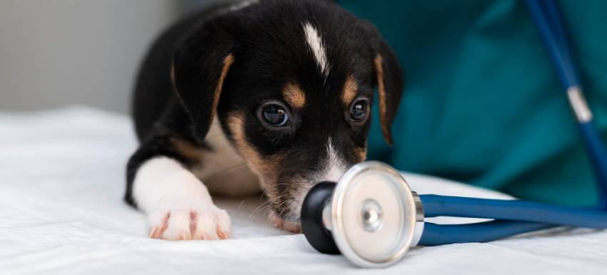

Cómo saber si mi cachorro tiene fiebre: Guía para detectar síntomas y cuidados
Cuando adoptamos un cachorro, nos embarcamos en una aventura llena de emociones, pero también llena de responsabilidades.
Una de las tareas más importantes es cuidar de su salud y, por ende, aprender a reconocer los signos de posibles enfermedades. Los cachorros son más vulnerables a diversas afecciones debido a que su sistema inmune está en desarrollo, por lo que la detección temprana es fundamental.
Entre los síntomas más comunes que pueden preocuparnos, la fiebre es uno de los más frecuentes. Pero, ¿Cómo saber si mi cachorro tiene fiebre?
En este artículo, te ofrecemos una guía detallada para identificar la fiebre en tu cachorro y cómo actuar de manera adecuada.
Sigue leyendo para informarte de todo.
¿Qué es la fiebre en cachorros?
La fiebre en cachorros no es una enfermedad en sí misma, sino una señal de que su cuerpo está combatiendo alguna infección o inflamación.
Es decir, la fiebre es una respuesta natural del organismo ante agresiones externas, como por ejemplo un virus, una bacteria, e incluso parásitos.
A pesar de ser un mecanismo de defensa, la fiebre en cachorros elevada puede ser peligrosa si no se controla, por lo que es vital estar atentos a los primeros signos.
Temperatura normal y la fiebre en cachorros
Antes de entrar en detalles sobre cómo identificar la fiebre, es importante conocer cuál es la temperatura normal en los cachorros.
La temperatura corporal ideal de un cachorro debe estar entre los 38°C y 39.2°C. Si su temperatura sube por encima de los 39.5°C, esto podría indicar fiebre. Sin embargo, no solo la temperatura es un indicativo; También es fundamental observar el comportamiento y otros síntomas asociados.
| Estado | Temperatura | Descripción |
|---|---|---|
| Temperatura normal | 38°C a 39.2°C | La temperatura corporal ideal de un cachorro. |
| Fiebre leve | 39.3°C a 39.9°C | Puede ser signo de una infección o inflamación leve. |
| Fiebre moderada | 40°C a 40.5°C | Indicativo de una infección más seria o de una reacción a una vacuna. |
| Fiebre alta | >40.5°C | Urge atención veterinaria inmediata. Puede ser grave. |
Causas comunes de la fiebre en cachorros
- Infecciones virales o bacterianas: Los cachorros son especialmente susceptibles a enfermedades como la parvovirosis o la leptospirosis, que pueden elevar su temperatura. Si no has completado su calendario de vacunación, es crucial que lo hagas lo antes posible para prevenir estas infecciones.
- Vacunas: Es normal que algunos cachorros desarrollen fiebre después de recibir sus vacunas, ya que el sistema inmunológico se activa para defenderse de los antígenos presentes en las vacunas. Aún así, si pasadas 24h desde la vacuna la fiebre persiste, es importante acudir al veterinario para descartar reacciones adversas.
- Parásitos internos: Los parásitos como las lombrices o giardias pueden provocar fiebre en los cachorros, además de otros síntomas como diarrea o vómitos.
- Inflamaciones: Cualquier proceso inflamatorio dentro del cuerpo del cachorro, ya sea causado por una infección o una lesión, puede dar lugar a fiebre.
- Traumatismos: Si tu cachorro ha sufrido una caída o golpe, esto puede desencadenar una respuesta inflamatoria que eleve su temperatura.
¿Cómo saber si mi cachorro tiene fiebre?
Cómo saber si tu cachorro tiene fiebre no siempre es fácil, ya que muchos de los síntomas pueden ser sutiles o incluso confundirse con otros problemas de salud.
Sin embargo, hay varios métodos y señales a los que debes estar atento:
Medición de la temperatura
El método más seguro para confirmar si tu cachorro tiene fiebre es medir su temperatura. La forma más precisa es mediante un termómetro digital veterinario diseñado para animales, que puedes insertar en su recto. Asegúrate de introducir el termómetro lubricado unos 2-3 cm en el recto del cachorro, mantenerlo durante 30-60 segundos y evitar movimientos bruscos. Siempre desinféctalo antes y después del uso. Como ya hemos visto, la fiebre se considera si la temperatura supera los 39.5°C.
Importante: Nunca automediques a tu cachorro. Los medicamentos humanos como el paracetamol o ibuprofeno son muy tóxicos y peligrosos para él.
Recuerda que, si no tienes un termómetro adecuado, lo mejor es acudir a una revisión veterinaria, donde un veterinario podrá tomar la medición correctamente.
Cambios en el comportamiento
Los cachorros son naturalmente juguetones y activos, pero si notas que tu animal está más apagado de lo normal, que evita jugar o que parece inusualmente cansado, esto podría ser un signo de fiebre.
Además, si tu cachorro deja de comer o muestra aversión al agua, es fundamental prestar atención a estos cambios, ya que la fiebre suele ir acompañada de pérdida de apetito.
Respiración acelerada
La fiebre puede hacer que tu cachorro respire más rápido de lo habitual. Si notas que su respiración se vuelve superficial y rápida, esto puede ser un indicio claro de que su cuerpo está intentando reducir la temperatura interna.
Calor corporal excesivo
Al tacto, puedes notar si tu cachorro tiene fiebre. Hay algunas zonas como por ejemplo las orejas, el hocico o el abdomen que pueden sentirse más calientes de lo normal. Si notas calor en su cuerpo, es recomendable medir su temperatura para confirmar si está realmente febril.
Temblores o escalofríos
Los temblores son una respuesta natural del cuerpo a la fiebre. Si observas que tu cachorro tiembla sin razón aparente, esto puede ser un signo de que está luchando contra una infección que ha elevado su temperatura corporal. Este síntoma es bastante frecuente en cachorros que tienen fiebre.
¿Qué hacer si mi cachorro tiene fiebre?
Como ya hemos mencionado, la fiebre en cachorros elevada puede ser peligrosa, por lo que si sospechas que está febril, es importante que actúes con rapidez y cautela.
- Mide su temperatura: Lo primero que debes hacer es medir la temperatura de tu cachorro. Si supera los 39.5°C, es probable que tenga fiebre, y será necesario actuar rápidamente.
- Mantenlo hidratado y en un lugar fresco: La fiebre puede deshidratar rápidamente a tu cachorro, así que asegúrate de que tenga acceso constante a agua fresca. Además, manténlo en un ambiente fresco y cómodo, evitando que se sobrecaliente más de lo necesario.
- No lo abrigues excesivamente: Si bien es común querer arropar a un cachorro enfermo, lo mejor es evitar usar mantas pesadas si tiene fiebre. Deja que su cuerpo regule la temperatura en un ambiente fresco y ventilado.
- Consulta con un veterinario: Si la fiebre persiste por más de 24 horas o si tu cachorro presenta otros síntomas graves como vómitos, diarrea o letargo extremo, es fundamental que acudas al veterinario. Un profesional podrá realizar un diagnóstico preciso y aplicar el tratamiento adecuado para tu cachorro.
En resumen, la fiebre en los cachorros es una señal de alerta para diversas condiciones de salud. Actuar con rapidez es esencial para asegurar su bienestar. Si notas que tu cachorro presenta fiebre o cualquier otro síntoma preocupante, es esencial que lo lleves a un profesional para obtener un diagnóstico adecuado.